Elevation Map
As we only care for the raster data of Singapore, we will be clipping out the raster data of the other countries. We will use the CostalOutline shapefile layer for this.
Firstly, go to Processing > Toolbox to open the Processing Toolbox, then type ‘fix geometries’ into the search bar. Click the Fix geometries tool, under Vector geometry.
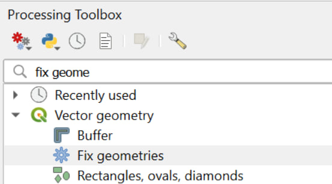
Select the input layer as CostalOutline, and repair method as ‘Structure’. Run the program when ready.
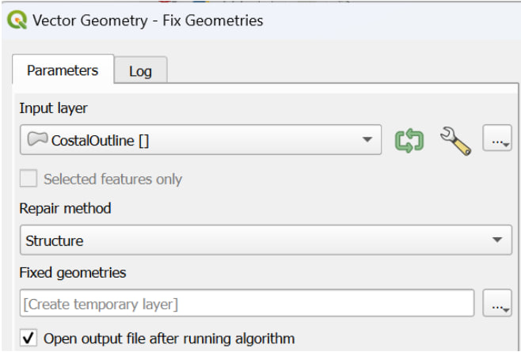
We will now use this output layer ‘Fixed Geometries’ for our raster clipping.
Go to Raster > Extraction > Clip Raster by Mask Layer. Use the following inputs:
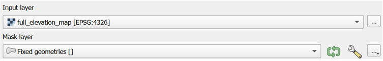
Click the wrench and select the following:
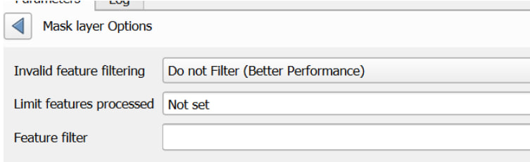
When ready, run the program. The result should look like this:
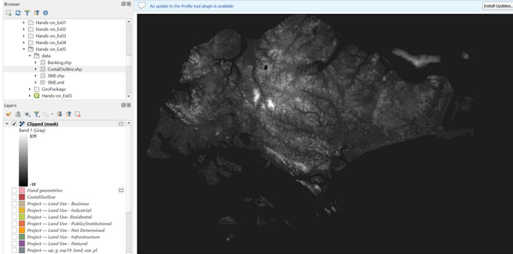
You may now export this layer as a GEOTIFF file. We shall call it SG_Elevation.
Slope
To determine the slope data, we will follow the method taught to us: Raster > Analysis > Slope, and inputting SG_Elevation as the input layer:
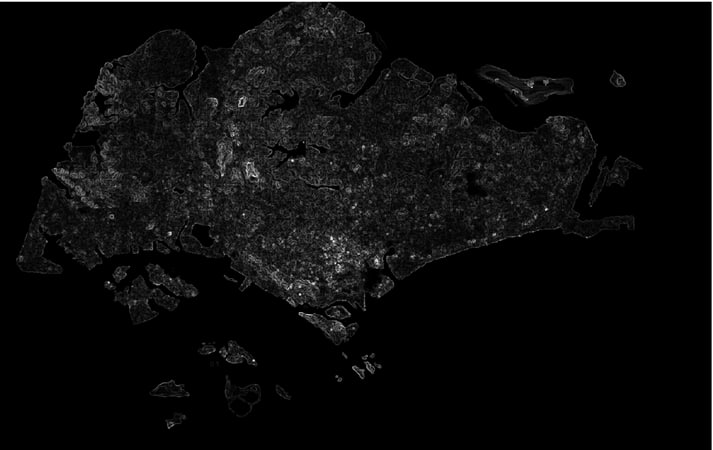
Next, we shall reclassify the slope data. Go to Processing > Toolbox and search ‘Reclassify by Table’. Input the following rows:
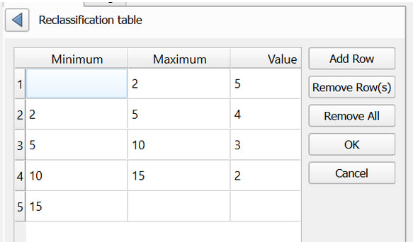
Run when ready, the result should be like this:
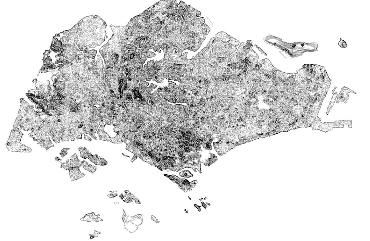
Save this as a GEOTIFF, we shall call it Slope_Degree.
Aspect
Aspect data, put simply, is data that describes the orientation that a slope landform takes. We will obtain this via the following method: go to Raster > Analysis > Aspect, then use the SG_Elevation layer as the input layer:
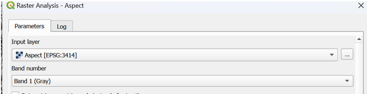
Click ‘Run’ when ready, and your result should look like so:
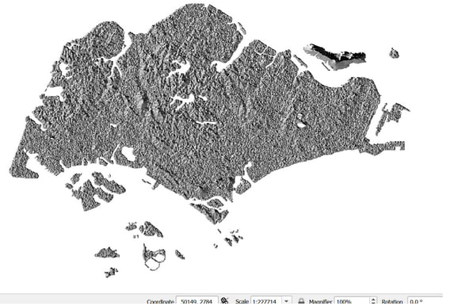
Save this as a GEOTIFF, we shall call it Aspect. Now, double click the layer and go to the ‘Symbology’ tab. Input the following:
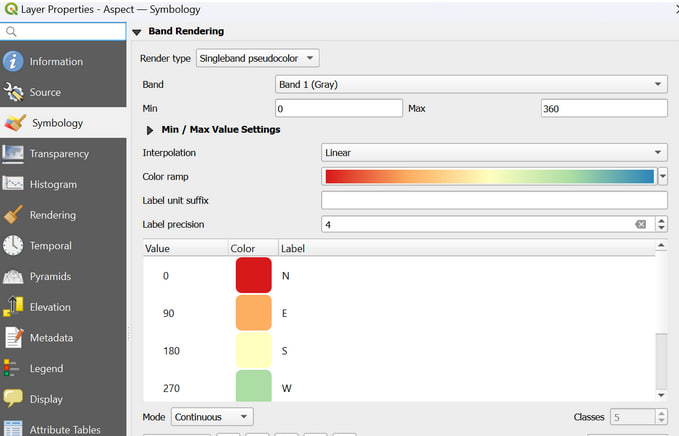
The value determines the direction the slope faces: 0 and 360 degrees is North, 90 is East, 180 is South, and 270 is West. After labelling, the result should appear like so:
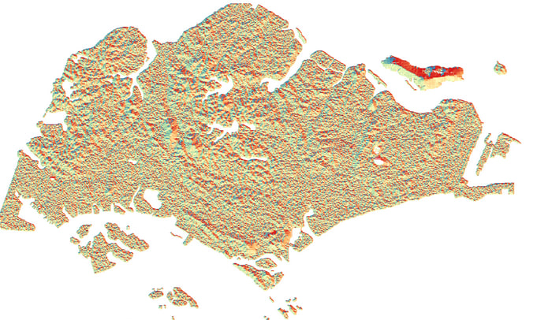
Proximity Map to Roads
One we have obtained a potential site for our solar farms, we want to see how connected the area is to road infrastructure. Below is a vector layer containing our potential site land space, superimposed with vector data from OSM for roads in Singapore:
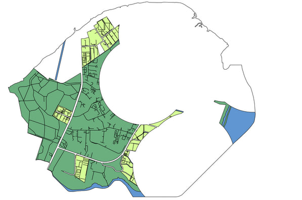
We will be constructing a proximity map for these roads. First, we Open Attribute Table for our osm roads data and add this field in the field calculator:
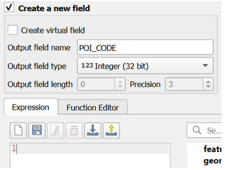
Then, go to Raster > Conversion > Rasterize and input the following:
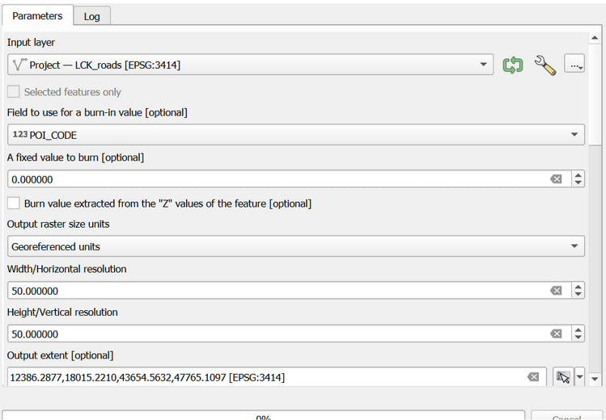
Output extent shall be the base layer. The result is like so:
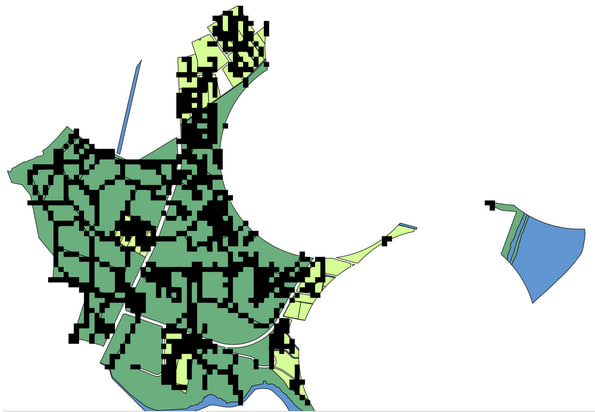
Next, go to Processing Toolbox panel, navigate to GDAL Analysis > Proximity (raster distance).
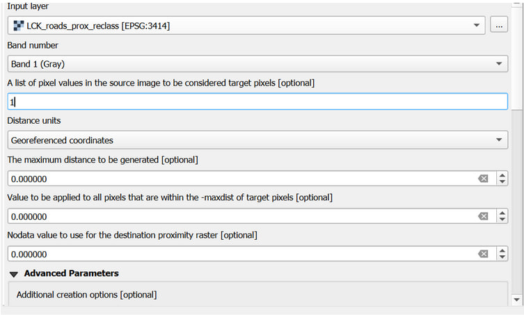
Your result will be like this:
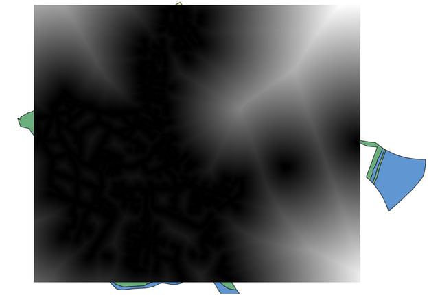
Reclassifying
We will now reclassify our proximity map so that we can determine suitable areas for constructing various types of infrastructure within solar farms. From the menu bar, click on Processing > Toolbox, and search for Reclassify by Table. The input layer shall be the proximity map we just made. Input the following:
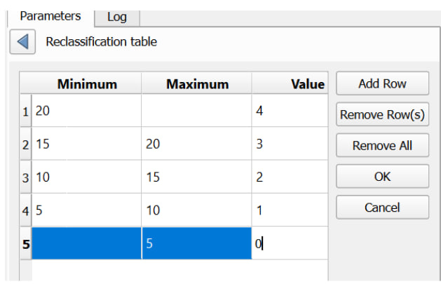
The result will be like this:
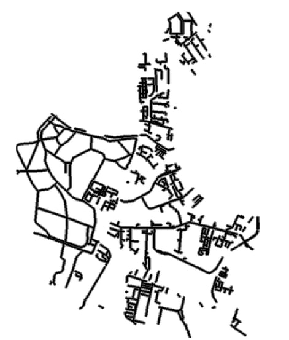
Since this is quite vague, we shall edit the Symbology of the layer like so:
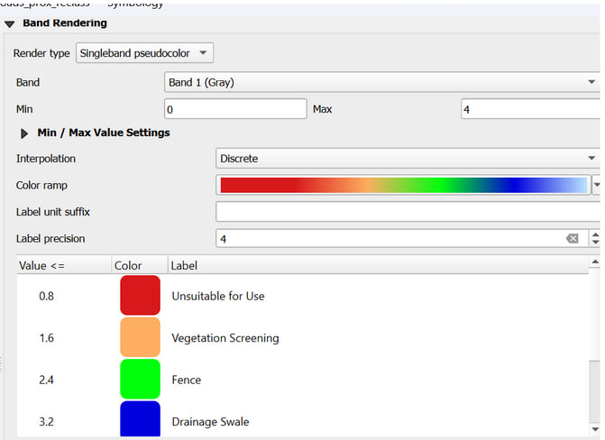
We will also lower the opacity of the layer so that we can see the base vector layer. The result is this:
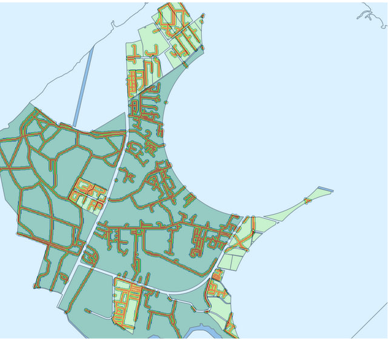
Obtaining Target Areas
Since we only consider specific regions like Lim Chu Kang and Murai, we need to preprocess the map data such that the focus is shifted to these regions. This is so that analysis is simpler, and the data we handle becomes more lightweight.
From Data Preparation -> Natural Reserve Buffer, the relevant restricted regions have already been filtered out. We will use that layer as a stepping stone to obtain the true regions that we analyze.
The only other polygon layer that we need is the Master Plan 2019 Subzone Layer.
- Open the attribute table of the MP19 Subzone Layer.
- Open “Select Features by Expression”.
- Enter this line:
- “SUBZONE_N” in (‘LIM CHU KANG’, ‘MURAI’) and click “Select Features”.
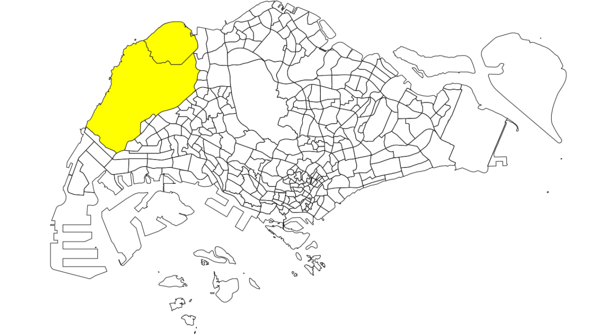
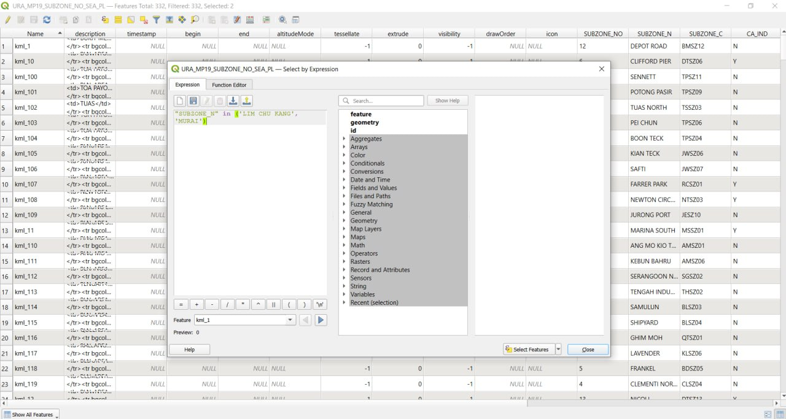
Save this layer as a temporary layer in GeoPackage format.
Given we have another layer that accounted for the restricted buffer zones, we want to overlay the temporary Lim Chu Kang + Murai layer to obtain the workable regions for solar farm deployment.
- Navigate to Vector -> Geoprocessing Tools -> Intersection.
- Select the input layer as the buffered layer, and the overlay layer as the temporary layer.
- Set invalid feature filtering to “Do not Filter”.
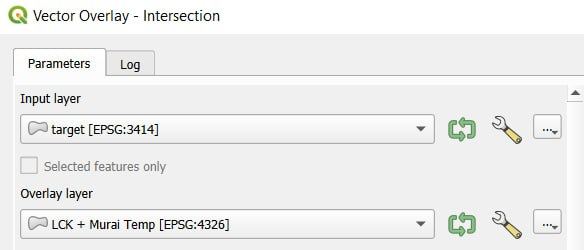
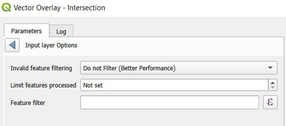
- Click “Run” to obtain the region consisting of Lim Chu Kang and Murai areas, but this time without including the restricted nature reserve areas.
- Save this layer as “Lim Chu Kang + Murai” in GeoPackage format.
The main area in question is Lim Chu Kang. Hence, we want to further concentrate on the Lim Chu Kang region. To do this:
- Open the attribute table of the temporary Lim Chu Kang + Murai Layer, and select the subzone where its name is Lim Chu Kang. That is, key in the expression: “SUBZONE_N” = ‘LIM CHU KANG’ and save it as “Lim Chu Kang Temp”
- Navigate to Vector -> Geoprocessing Tools -> Intersection.
- Select the input layer as the “Lim Chu Kang + Murai” layer, and the overlay layer as “Lim Chu Kang Temp”.
- Similarly apply “Do not Filter” to invalid feature filtering.
- Click “Run” to obtain the relevant region.
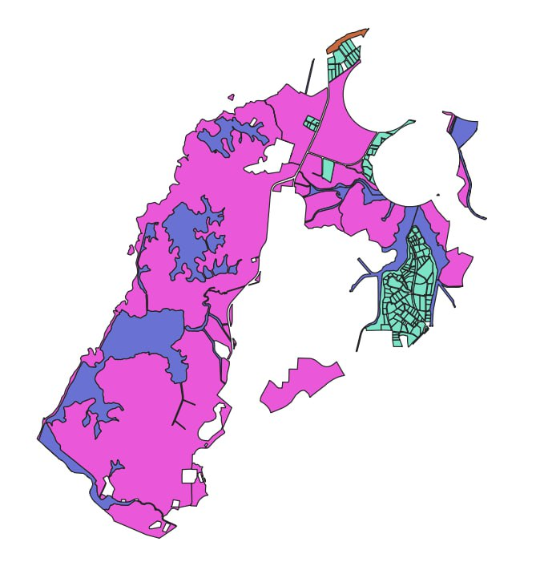
It would be a waste not to consider the already existing agrivoltaics initiatives and the surrounding reservoirs near Lim Chu Kang. Hence, we will add it to the target regions as well.
Open the attribute table of “Lim Chu Kang + Murai” layer.
Select “Fields and Values”, “LU_DESC”, and click on “All Unique”.
Notice that there are 4 different types of land use within these regions: AGRICULTURE (agrivoltaics), WATERBODY (reservoirs), OPEN, and PARK.
Enter this expression: “LU_DESC” = ‘AGRICULTURE’
Click “Select Features”, then click “Close”.
Right click on the layer, and Save Selected Features as “Lim Chu Kang + Murai - Agrivoltaics”.
Repeat the above 3 steps with the expression “LU_DESC” = ‘WATERBODY’ and the layer name “Lim Chu Kang + Murai - Waterbodies’.
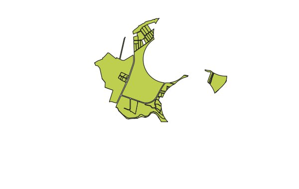
However, not every water body is a reservoir. For this, we consulted Google Maps to determine which ones are reservoirs. Afterwards, we manually select these regions, as there are not too many of them.
- At the top navigation, toggle Select Features by Single Click, as shown in the picture below.
- Manually select the areas that denote reservoirs according to Google Maps.
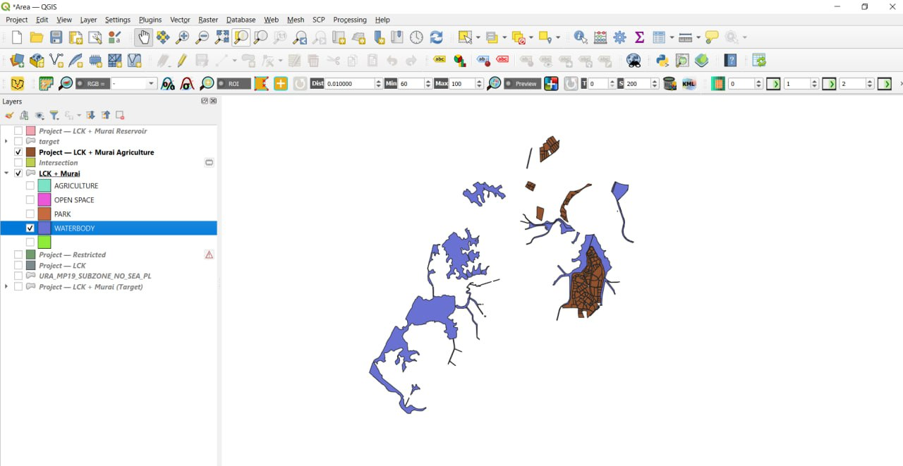
- Save these selected features as “Lim Chu Kang + Murai - Reservoirs”
We are finally ready to merge everything together.
- Navigate to Vector -> Data Management Tools -> Merge Vector Layers Select THREE inputs:
- The temporary Intersection layer of Lim Chu Kang
- Lim Chu Kang + Murai - Agrivoltaics
- Lim Chu Kang + Murai - Reservoirs
- Click “Run”, and verify that the output looks something like below.
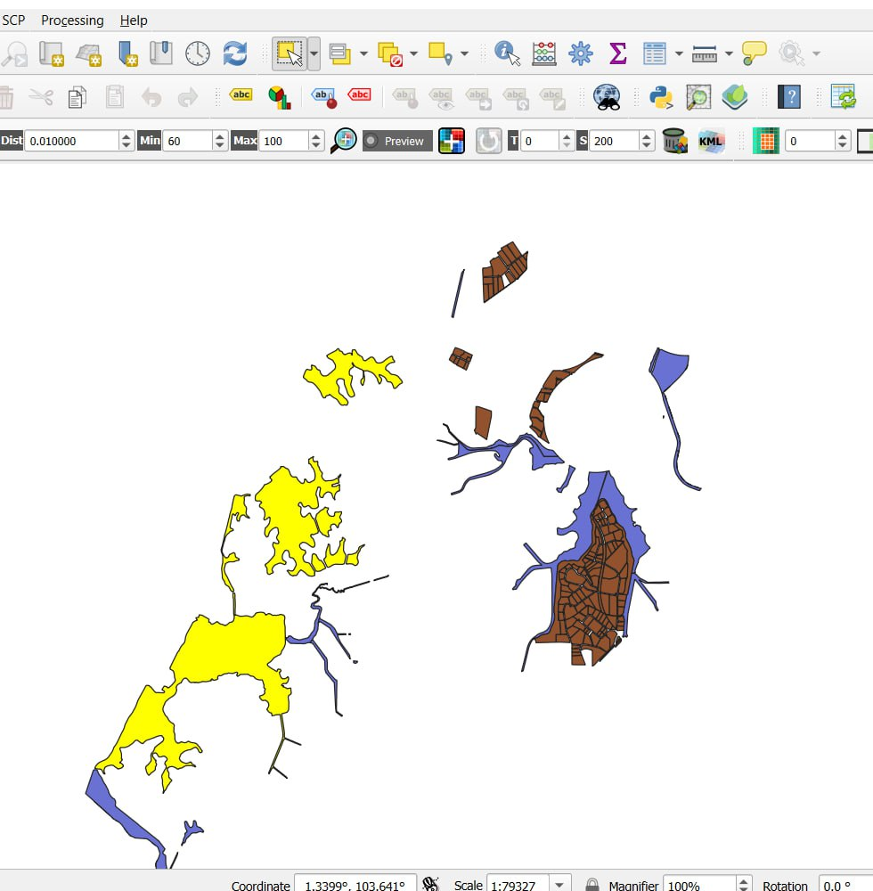
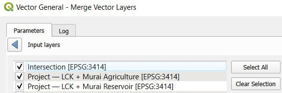
- Save this final layer as “Lim Chu Kang + Murai - Target”.
Optionally, we can categorize the target area by land use.
- Right click on “Lim Chu Kang + Murai - Target”, and access Properties -> Symbology.
- From the top-most dropdown box, select “Categorized”, and the Value to “LU_DESC”.
- Click “Classify”, then click “Ok”.
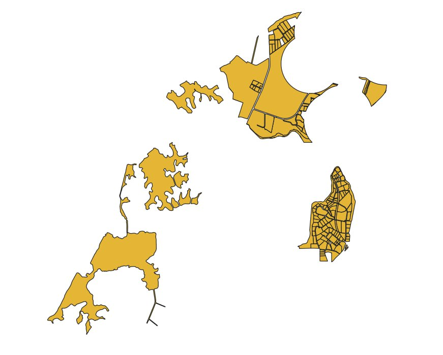
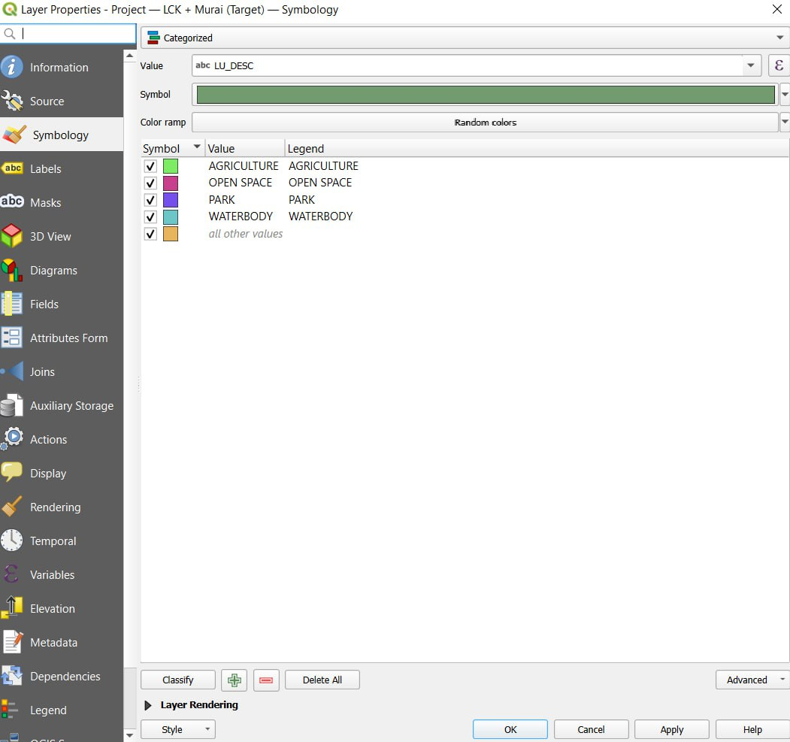
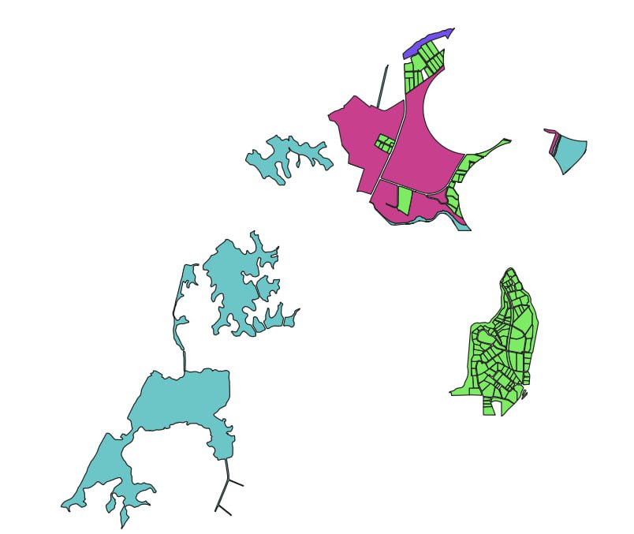